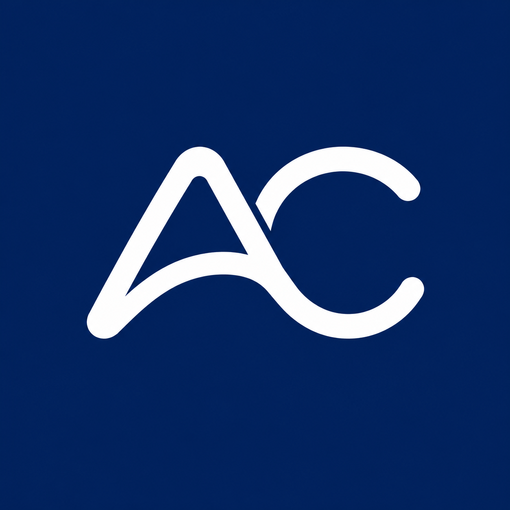

Tu negocio
tiene su lógica.
El software debe entenderla.
Soy Alexis Cabrera. Desarrollo soluciones Odoo
conectando procesos, datos y personas.
a conectar
UNA OPERACIÓN. MUCHAS PIEZAS.
Lo importante ocurre
entre las partes.
Un pedido no termina en una venta.
Continúa en el almacén, en las cuentas
y en las decisiones del equipo.
Piezas separadas. Contexto incompleto.
EMPECEMOS POR EL PROBLEMA
¿Dónde se rompe
la conexión?
Elige una situación.
Veamos qué cambia.
DE LA IDEA A UN CASO REAL
Conectar también
es dar contexto.
Integración de telefonía 3CX con Odoo.
Maubius · 2025
Una llamada.
Todo el contexto.
Experiencia documentada en el CV. Representación visual ilustrativa.

DETRÁS DE LAS CONEXIONES
Entender primero.
Construir después.
Más de 10 años traduciendo necesidades de negocio en software que funciona de punta a punta.
Trabajo entre el backend Python, las interfaces OWL y los datos en PostgreSQL. Me interesa cómo una decisión técnica afecta a la persona que utiliza el sistema cada día.
También contribuyo al ecosistema OCA / OpenUpgrade: evolucionar tiene más sentido cuando el conocimiento se comparte.
Descargar CV PDF · Francés